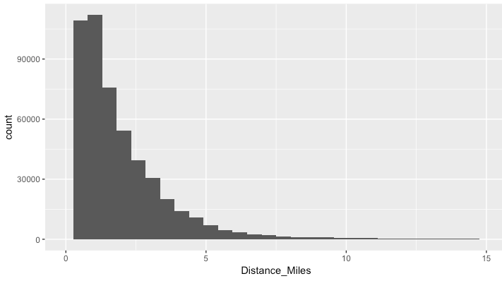
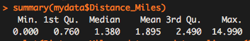

This post is based on my entry to the “cRaggy” data viz competition at the 2018 Cascadia Rconf. The assignment was to use two years of trip data from the BIKETOWN bike share system in Portland and submit a visualization that explores some aspect of the data set. There are about 60,000 trips in the data set, with attributes including timestamp, starting and ending geographic coordinates, starting and ending BIKETOWN station, type of payment plan used, trip duration, and distance.
I was interested in where riders were taking the bikes (trip ends) and how that varies by some different criteria. My question was:
How do the locations of trip ends vary by trip distance?
I thought that maybe commuters were taking longer trips to reach destinations downtown than other users like tourists taking the bikes to attractions like waterfront park or shops and restaurants in commercial districts on the east side of the river.
Looking at the distribution of trip distances, It was appropriate to break the trips at lengths of <1 mile, <2 miles, and >2 miles.
I had never used the ggmap package in R to visualize spatial data, so I took this opportunity to do so. It is a huge improvement over some of the other spatial data packages I tried out a few years ago. The plot I made uses a 2d density plot and the facet_wrap function to view the trip ends by different bins of trip distance. You can see the plot below.
Some of the shortest trips end in NW Portland, likely coming from downtown. The 1 to 2 mile trip ends appear dispersed around downtown. The longer trips have a notable cluster at the SW waterfront park fountain. I bet a lot of these are people who ride the ~3 mile waterfront loop along the SW waterfront and Eastbank Esplanade.
{kind=link}